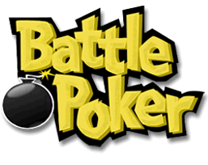

5 |
Introduction |
 |

Le Battle Poker est un jeu de cartes familial amicale pouvant compter jusqu’à quatre joueurs qui se battent contre l’horloge afin d’obtenir la meilleure main de cinq cartes possible.
Les batailles se déroulent en plusieurs parties avec des points accumulés à chacune de parties basés sur la qualité de la main. Chaque joueur utilise une Wii Remote pour pointer et sélectionner un jeu de cartes standard disposé sur l’écran. Le premier clic tourne la carte, à quel point elle peut être prise par n’importe quel joueur. Vous devez avoir des yeux et doigts rapides pour prendre les cartes dont vous avez besoin avant qu’un autre joueur les saisit à votre place.
Le Battle Poker utilise le classement traditionnel des mains de poker pour déterminer la valeur de chacune de mains pour tous les jeux parmi lesquels le pointage par classement des mains est utilisé. Une main est déterminée en utilisant la meilleure combinaison possible en utilisant (jusqu’à) cinq cartes.
Dans certains modes de jeu, il est possible de choisir moins de cinq cartes, et dans ces cas, le Battle Poker va tout de même attribuer des points à la meilleure main possible selon les cartes disponibles.
Chaque type de main est représenté par un icône comme démontré:
Dans les mains où le pointage simple est utilisé, chaque main est comptée comme un point simple.
|
||||||||||||||||||||||||||||||||||||||||||||||||||||||||||||||||||||||||||||||||||||||||||||||||||||||||||||||||||||||||||||||||||||||


 |
 |
 |